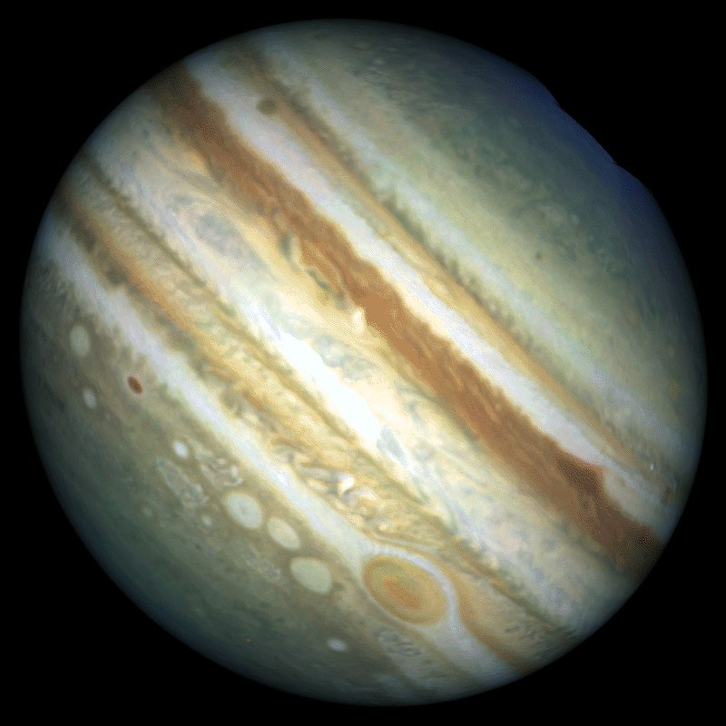

Odległość od Słońca w mln km: 778,3
Okres obiegu wokół Słońca: 11 lat 315 dni
Okres rotacji: 9,8 godzin
Średnica (km): 142800
Masa (Ziemia = 1): 317,9
Objętość (Ziemia = 1): 1316
Gęstość (g/cm³): 1,32
Prędkość ruchu po orbicie (km/s): 13,1
Liczba znanych księżyców: 63
Jowisz wybrzusza się na równiku i spłaszcza na biegunach z powodu dużych wirowań. Wiatry na nim osiągają prędkość do 500 km/h. Szybki ruch wirowy i ciepło z wnętrza planety powodują powstanie silnych wiatrów, dzielących atmosferę na równoleżnikowe pasy opadających lub wznoszących się gazów. Na tarczy Jowisza widać też cyklon o średnicy dwukrotnie większej od Ziemi, zwany Wielką Czerwoną Plamą. Ten huragan szaleje na Jowiszu od co najmniej 300 lat. Na Jowiszu występuje wodór i hel, z których zbudowane są gwiazdy. Jowisz jest pierwszą z czterech wielkich planet - gazowych gigantów i jednocześnie największą planetą Układu Słonecznego. Jest on gazowa kulą, choć posiada prawdopodobnie jądro z płynnych skał. Obłoki na Jowiszu tworzą jedną warstwę, jednak jej skład nie jest jeszcze zidentyfikowany.
Galileusz odkrył cztery księżyce Jowisza prawie 400 lat temu. Były to pierwsze obiekty w przestrzeni kosmicznej odkryte za pomocą teleskopu. Od nazwiska odkrywcy noszą one nazwę księżyców galileuszowskich, a są to: Io, Europa, Ganimedes i Callisto, przy czym Ganimedes to największy księżyc w Układzie Słonecznym. Pewne obszary jego powierzchni pokrywają dziwne bruzdy, które ciągną się na tysiące kilometrów. Callisto zaś najbardziej przypomina nasz Księżyc i jest całkowicie pokryty kraterami.
16 lipca 1994 roku ogromne kawałki komety Shoemaker - Levy 9 zderzyły się z Jowiszem. Odłamki tej komety poruszały się z prędkością 60 km/s. Po niedługim czasie eksplodowały, a fontanna rozgrzanej materii kometarnej zmieszała się z gorącymi gazami atmosfery Jowisza, które uniosły się na wysokość kilku tysięcy kilometrów ponad warstwę obłoków spowijających planetę olbrzyma. Gdy wyrzucona w górę materia opadła z powrotem ku stratosferze Jowisza, utworzyła ciemną plamę w kształcie półksiężyca. Otaczała ona nieduży, jeszcze ciemniejszy ślad, który powstał w miejscu wtargnięcia komety w atmosferę. Dwa dni później inny odłamek komety uderzył w Jowisza z taką siłą, że fontannę wyrzuconej materii rozświetlił blask przewyższający jasność całej planety. Ostatecznie powierzchnia Jowisza została naznaczona 21 ciemnymi piętnami. Średnica każdego z nich przewyższała średnicę Ziemi.
Galileusz odkrył cztery księżyce Jowisza prawie 400 lat temu. Były to pierwsze obiekty w przestrzeni kosmicznej odkryte za pomocą teleskopu. Od nazwiska odkrywcy noszą one nazwę księżyców galileuszowskich, a są to: Io, Europa, Ganimedes i Callisto, przy czym Ganimedes to największy księżyc w Układzie Słonecznym. Pewne obszary jego powierzchni pokrywają dziwne bruzdy, które ciągną się na tysiące kilometrów. Callisto zaś najbardziej przypomina nasz Księżyc i jest całkowicie pokryty kraterami.
16 lipca 1994 roku ogromne kawałki komety Shoemaker - Levy 9 zderzyły się z Jowiszem. Odłamki tej komety poruszały się z prędkością 60 km/s. Po niedługim czasie eksplodowały, a fontanna rozgrzanej materii kometarnej zmieszała się z gorącymi gazami atmosfery Jowisza, które uniosły się na wysokość kilku tysięcy kilometrów ponad warstwę obłoków spowijających planetę olbrzyma. Gdy wyrzucona w górę materia opadła z powrotem ku stratosferze Jowisza, utworzyła ciemną plamę w kształcie półksiężyca. Otaczała ona nieduży, jeszcze ciemniejszy ślad, który powstał w miejscu wtargnięcia komety w atmosferę. Dwa dni później inny odłamek komety uderzył w Jowisza z taką siłą, że fontannę wyrzuconej materii rozświetlił blask przewyższający jasność całej planety. Ostatecznie powierzchnia Jowisza została naznaczona 21 ciemnymi piętnami. Średnica każdego z nich przewyższała średnicę Ziemi.